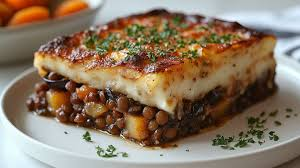

Bechamel Sauce

Description
Bechamel sauce is a recipe staple that elevates your lasagna and similar dishes.
Ingredients
Steps
- Melt margarine in sauce pan.
- Add flour and stir well.
- Add milk and keep stirring until sauce is viscid.
This recipe works great with this lasagna recipe
Home